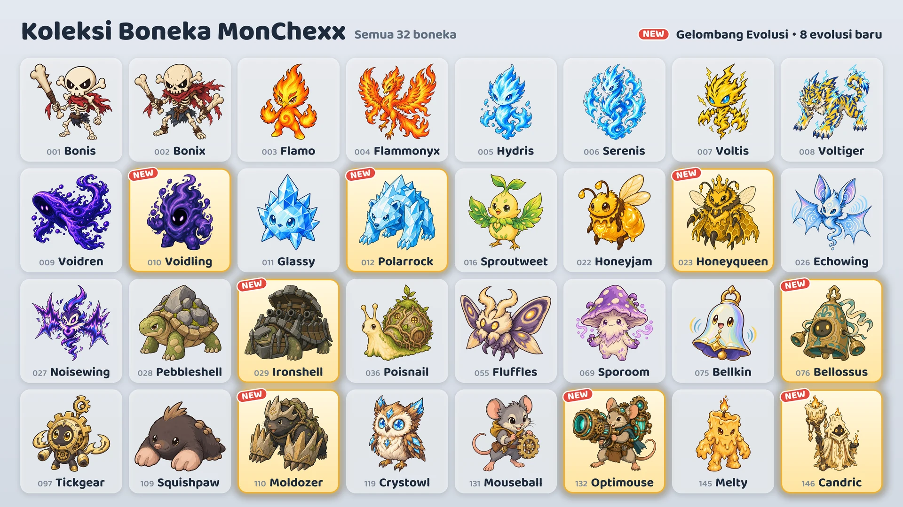

Delapan evolusi baru ditambahkan pada 17 Oktober.

Delapan evolusi baru
- Voidling: evolusi dari Voidren · Tank / Petarung
- Polarrock: evolusi dari Glassy · Tank / Petarung
- Honeyqueen: evolusi dari Honeyjam · Pendukung / Jarak Jauh
- Ironshell: evolusi dari Pebbleshell · Tank
- Bellossus: evolusi dari Bellkin · Tank
- Moldozer: evolusi dari Squishpaw · Tank / Penyergap
- Optimouse: evolusi dari Mouseball · Jarak Jauh
- Candric: evolusi dari Melty · Pendukung / Jarak Jauh
Cara mendapatkannya
- Mesin capit (event): Selama event (17–24 Oktober), setiap mesin capit kecuali dua mesin di kedua ujung barisan berisi satu jenis evolusi baru bersama dua jenis boneka lain. Setelah event berakhir, evolusi baru juga masuk ke mesin dengan peluang yang sama seperti boneka lain.
- Tempat Tukar Boneka: Tukar 10 boneka cadangan dengan boneka pilihanmu (Tukar Pilihan), atau 3 boneka cadangan dengan boneka acak (Tukar Acak).
- Paket Boneka: Evolusi baru juga bisa didapat dari paket boneka.
Menggunakan boneka evolusi
- Boneka evolusi dikoleksi secara terpisah dan bisa langsung dimasukkan ke tim begitu dimiliki.
- Di layar Susun Timmu, pilih boneka lalu ketuk Wujud Dasar atau Evolusi untuk mengganti wujudnya.
- Satu tim hanya bisa berisi satu boneka dari setiap jalur evolusi.
- Boneka evolusi naik level secara terpisah dari boneka wujud dasarnya.
Boneka baru
Nilai yang dihitung dari Daya Serang, Daya Sihir, atau Darah Maksimum ikut bertambah saat level boneka naik.
 Voidling · Tank/Petarung · Jangkauan 1 petak
Voidling · Tank/Petarung · Jangkauan 1 petak
- Serapan Kehampaan: Menambah Darah Maksimum diri sendiri sebesar 200% Daya Sihir ditambah 3% Darah Maksimum saat awal pertarungan, lalu memulihkan Darah sebanyak pertambahan itu. Setelah itu, memberikan kerusakan sihir kepada semua musuh dalam jarak 1 petak dari diri sendiri sebesar 10% Darah Maksimum diri sendiri. Saat Darah Maksimumnya mencapai 3 kali Darah Maksimum di awal pertarungan, jarak ini bertambah 1 petak, lalu bertambah sebanyak itu lagi untuk setiap kelipatan berikutnya. Darah Maksimum yang bertambah ini bertahan sampai pertarungan berakhir.
- Pesta Kehampaan: Mendapat 10 Mana setiap kali musuh dalam jarak 4 petak menggunakan skill aktif.
 Polarrock · Tank/Petarung · Jangkauan 1 petak
Polarrock · Tank/Petarung · Jangkauan 1 petak
- Hantaman Embun Beku: Memberikan kerusakan fisik sebesar 240% Daya Serang kepada target saat ini dan membuatnya Membeku selama 1,5 detik. Musuh yang Membeku berhenti bertindak dan berhenti mendapat Mana. Musuh di dalam area kerucut yang membentang 2 petak di belakang target menerima kerusakan fisik sebesar 180% Daya Serang dan terkena Embun Beku yang menurunkan Kecepatan Serangnya sebesar 15% selama 6 detik.
- Kulit Kristal: Kerusakan sihir yang diterima berkurang 20%. Berlaku juga untuk kerusakan sihir berkala, dan dihitung setelah Ketahanan Sihir diterapkan.
 Honeyqueen · Pendukung/Jarak Jauh · Jangkauan 3 petak
Honeyqueen · Pendukung/Jarak Jauh · Jangkauan 3 petak
- Jeli Ratu: Memulihkan Darah semua lebah pekerja miliknya sebesar 10% Darah Maksimum masing-masing, dan meningkatkan Kecepatan Serang mereka sebesar 200% selama 3 detik. Setelah itu, jika jumlah lebah pekerja kurang dari batas maksimum, memanggil 1 lebah pekerja ke petak kosong di sekitarnya.
- Pasukan Lebah: Bisa memiliki paling banyak 3 lebah pekerja sekaligus. Atribut lebah pekerja meningkat sesuai level Honeyqueen, dan lebah pekerja tidak menjadi target efek untuk sekutu yang jumlah targetnya dibatasi. Setiap detik, lebah pekerja menerima kerusakan sihir sebesar 4% Darah Maksimumnya. Jika Honeyqueen tumbang, lebah pekerja mengamuk sehingga kerusakan yang diberikan dan diterimanya menjadi 2 kali lipat.
- Darah lebah 60 · Daya Serang lebah 40 (Lv.1)
 Ironshell · Tank · Jangkauan 1 petak
Ironshell · Tank · Jangkauan 1 petak
- Tembakan Berputar: Mulai dari arah yang dihadapinya, berputar ke tiap arah satu per satu berlawanan arah jarum jam sambil menembakkan meriam 6 kali. Setiap peluru meriam memberikan kerusakan fisik sebesar 500% Daya Serang kepada musuh pertama dalam jarak 2 petak ke arah itu. Jeda antarpeluru adalah 0,5 detik dan berubah sesuai Kecepatan Serang. Tidak bergerak selama menembak; jika Pingsan atau Membeku, peluru yang tersisa tidak ditembakkan. Tidak mendapat Mana sampai rentetan tembakan berakhir.
- Cangkang Benteng: Untuk setiap musuh dalam jarak 1 petak dari diri sendiri, Pertahanan dan Ketahanan Sihir meningkat 35.
 Bellossus · Tank · Jangkauan 1 petak
Bellossus · Tank · Jangkauan 1 petak
- Dentang Lonceng: Memberikan perisai sebesar 300% Daya Sihir kepada diri sendiri dan memprovokasi semua musuh dalam jarak 2 petak dari diri sendiri, keduanya selama 2 detik. Selama itu, musuh yang terprovokasi hanya menyerang Bellossus dan tidak bisa mulai menggunakan skill baru. Selama waktu yang sama, setiap kali terkena serangan dasar musuh, memberikan kerusakan sihir kepada semua musuh dalam jarak 2 petak dari diri sendiri sebesar 25% kerusakan serangan itu sebelum dikurangi Pertahanan dan perisai. Tidak mendapat Mana sampai Provokasi selesai.
- Resonansi: Setiap kali sekutu lain dalam jarak 2 petak dari diri sendiri menggunakan skill aktif, memulihkan Darah diri sendiri sebesar 50% Daya Sihir.
 Moldozer · Tank/Penyergap · Jangkauan 1 petak
Moldozer · Tank/Penyergap · Jangkauan 1 petak
- Serbuan Terowongan: Menggali ke bawah tanah sambil menghapus semua pelemahan dari diri sendiri, bergerak 3 kali Kecepatan Gerak ke petak kosong dengan musuh paling banyak dalam jarak 1 petak darinya, lalu memberikan kerusakan fisik sebesar 500% Daya Serang kepada semua musuh dalam jarak 1 petak di sekitarnya. Tidak bisa diserang selama di bawah tanah.
- Cakar Batu: Pertahanan meningkat sebesar 20% Daya Serang.
- Memulai pertarungan dengan 0 Mana.
 Optimouse · Jarak Jauh · Jangkauan 4 petak
Optimouse · Jarak Jauh · Jangkauan 4 petak
- Meriam Laser: Mengisi daya meriam laser ke arah target saat ini dalam jarak 4 petak selama 1,5 detik, lalu menembakkan laser selebar 1 petak sampai ke ujung lapangan dan memberikan kerusakan sihir sebesar 1000% Daya Serang kepada semua musuh di jalur laser. Arahnya ditentukan saat mulai mengisi daya; jika Pingsan atau Membeku selama mengisi daya, tembakan dibatalkan.
- Sirkuit Pemanasan: Setiap kali melakukan serangan dasar, Kecepatan Serang meningkat 20% tanpa batas, dan diatur ulang saat menggunakan skill aktif.
 Candric · Pendukung/Jarak Jauh · Jangkauan 3 petak
Candric · Pendukung/Jarak Jauh · Jangkauan 3 petak
- Api Abadi: Memasang tanda selama 5 detik pada satu sekutu dengan Darah saat ini paling rendah, tidak termasuk diri sendiri. Juga memberikan perisai sebesar 200% Daya Sihir miliknya sendiri kepada sekutu bertanda selama waktu yang sama. Jika kerusakan langsung akan membuat sekutu bertanda tumbang, menanggung 200% dari kerusakan itu sebagai gantinya, dan sekutu itu tidak menerima kerusakan tersebut. Hanya satu tanda yang bisa aktif dalam satu waktu, dan tanda tidak mencegah tumbang karena kerusakan berkala.
- Lilin Meleleh: Sisa kerusakan langsung yang diterima setelah ditahan perisai mengurangi Darah secara bertahap selama 4 detik. Kerusakan berkala diterima seketika.
Pertandingan peringkat dan lencana
- Lawan di pertandingan peringkat juga menggunakan evolusi baru.
- Delapan evolusi baru tidak dihitung untuk lencana “Koleksi Musim 1”.
- Lencana “Ahli Evolusi” didapat dengan memiliki 5 boneka evolusi yang berbeda. Kini ada 13 boneka evolusi.
Perubahan keseimbangan semua boneka bisa dilihat di catatan patch “Keseimbangan & Sistem Pertarungan”.